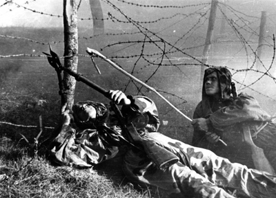
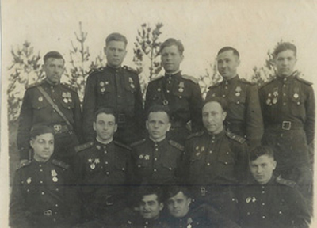
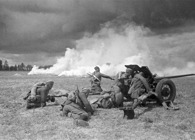

<!DOCTYPE HTML PUBLIC "-//W3C//DTD HTML 4.01 Transitional//EN" "http://www.w3.org/TR/html4/loose.dtd">
<html lang="en">
<head>
	<meta http-equiv="Content-Type" content="text/html; charset=iso-8859-1">
	<meta http-equiv="Content-Style-Type" content="text/css">
	<meta http-equiv="Content-Script-Type" content="text/javascript">
	<meta name="viewport" content="width=device-width, initial-scale=1">
	<title>Soviet Jewish Veterans</title>
	<meta name="description" content="This is a collection of interviews with Soviet Jews who fought on the Eastern Front in World War Two. Each video is accompanied by a short biography and links to historical information.">
	<meta name="keywords" content="soviet jewish veterans,  jewish war veterans, soviet war veterans, world war two veterans, ww2 jewish veterans, ww2 soviet jewish veterans, Soviet jewish war veterans, Russian jewish war veterans, Soviet Jewish soldiers, Soviet Jewish Aviators, Soviet Jews During World War 2, Jews in Russia World War 2, Russian Jews in the war, Soviet Jews fighting in the war, Jewish soldiers in World War 2, Soviet Jewish soldier interviews, Russian Jewish veteran interviews, Soviet Jewish veteran video interviews">
	<link rel="apple-touch-icon" sizes="57x57" href="images/favicons/apple-touch-icon-57x57.png">
	<link rel="apple-touch-icon" sizes="114x114" href="images/favicons/apple-touch-icon-114x114.png">
	<link rel="apple-touch-icon" sizes="72x72" href="images/favicons/apple-touch-icon-72x72.png">
	<link rel="apple-touch-icon" sizes="144x144" href="images/favicons/apple-touch-icon-144x144.png">
	<link rel="apple-touch-icon" sizes="60x60" href="images/favicons/apple-touch-icon-60x60.png">
	<link rel="apple-touch-icon" sizes="120x120" href="images/favicons/apple-touch-icon-120x120.png">
	<link rel="apple-touch-icon" sizes="76x76" href="images/favicons/apple-touch-icon-76x76.png">
	<link rel="apple-touch-icon" sizes="152x152" href="images/favicons/apple-touch-icon-152x152.png">
	<link rel="icon" type="image/png" href="images/favicons/favicon-196x196.png" sizes="196x196">
	<link rel="icon" type="image/png" href="images/favicons/favicon-160x160.png" sizes="160x160">
	<link rel="icon" type="image/png" href="images/favicons/favicon-96x96.png" sizes="96x96">
	<link rel="icon" type="image/png" href="images/favicons/favicon-16x16.png" sizes="16x16">
	<link rel="icon" type="image/png" href="images/favicons/favicon-32x32.png" sizes="32x32">
	<meta name="msapplication-TileColor" content="#da532c">
	<meta name="msapplication-TileImage" content="images/favicons/mstile-144x144.png">
	<link href="css/bootstrap.min.css" rel="stylesheet">
	<link href="css/custom.css" media="all" rel="stylesheet" type="text/css">
	<link href="css/font-awesome.min.css" media="all" rel="stylesheet" type="text/css">
	<link href="css/responsive.css" media="all" rel="stylesheet" type="text/css">
	<noscript>
		<div class="jumbotron alert-error text-center">
			<h4>Soviet Jewish Veterans Project requires javascript to be enabled. Please <a href="http://enable-javascript.com/" target="_blank">enable javascript</a></h4>
		</div>	
	</noscript>	
</head>
<body>
	<!-- COMPONENTS & PARTIALS -->
	<script type="text/x-handlebars" data-template-name='components/soviet-navigation'>
		<div class="navbar navbar-default main" role="navigation">
			<div class="container-fluid">
		    	<div class="nav nav-justified">
					{{#link-to "index" classNames="navbar-brand"}}SOVIET JEWISH VETERANS{{/link-to}}
		        </div>
			</div>
		</div>
		<div class="navbar navbar-default" role="navigation">
			<div class="container-fluid">
		    	<div class="navbar-header text-center">
		        	<button type="button" class="navbar-toggle" data-toggle="collapse" data-target=".navbar-collapse">
		            	<span class="sr-only">Toggle navigation</span>
		              	<span class="icon-bar"></span>
		              	<span class="icon-bar"></span>
		              	<span class="icon-bar"></span>
		            </button>
		        </div>
		        <div class="navbar-collapse collapse text-center">
		            <ul class="nav navbar-nav">
		              	{{partial "nav_links"}}
		            </ul>
		        </div>
			</div>
		</div>
	</script>
	
	<script type="text/x-handlebars" data-template-name="_nav_links">
		<li>{{#link-to "about"}}About{{/link-to}}</li>
		<li>{{#link-to "veterans"}}Veterans{{/link-to}}</li>
		<li class="dropdown">
			<a href="#" class="dropdown-toggle" data-toggle="dropdown">Jews in Russia/Soviet Union <span class="caret"></span></a>
			<ul class="dropdown-menu" role="menu">
				<li>{{#link-to "jews-in-russia-soviet-union"}}Jews in Russia/Soviet Union{{/link-to}}</li>
				<li>{{#link-to "story" 400}}Tsarist Period{{/link-to}}</li>
				<li>{{#link-to "story" 401}}Russian Revolution{{/link-to}}</li>
				<li>{{#link-to "story" 402}}Soviet Union 1920&#39;s - 1930&#39;s{{/link-to}}</li>
				<li>{{#link-to "jews-in-russia-soviet-union" id="WWII-period"}}World War II Period{{/link-to}}</li>
				<li>{{#link-to "jews-in-russia-soviet-union" id="post-war"}}Post War 1945 - 1953{{/link-to}}</li>
			</ul>
		</li>
		<li class="dropdown">
			<a href="#" class="dropdown-toggle" data-toggle="dropdown">WWII Soviet History <span class="caret"></span></a>
			<ul class="dropdown-menu" role="menu">
				<li>{{#link-to "soviet-history"}}WWII Soviet History{{/link-to}}</li>
				<li>{{#link-to "soviet-history"}}Eastern Front{{/link-to}}</li>
				<li>{{#link-to "soviet-history" id="leaders"}}War Time Leaders{{/link-to}}</li>
				<li>{{#link-to "soviet-history" id="smersh-nkvd"}}SMERSH and NKVD{{/link-to}}</li>
				<li>{{#link-to "story" 410}}Partisans{{/link-to}}</li>
			</ul>
		</li>
		
		<li class="dropdown">
			<a href="#" class="dropdown-toggle" data-toggle="dropdown">WWII Battles <span class="caret"></span></a>
			<ul class="dropdown-menu" role="menu">
				<li>{{#link-to "battles"}}WWII Battles{{/link-to}}</li>
				<li>{{#link-to "battle" 202}}Berlin{{/link-to}}</li>
				<li>{{#link-to "battle" 207}}Budapest{{/link-to}}</li>
				<li>{{#link-to "battle" 204}}Konigsberg{{/link-to}}</li>
				<li>{{#link-to "battle" 210}}Kursk{{/link-to}}</li>
				<li>{{#link-to "battle" 200}}Leningrad{{/link-to}}</li>
				<li>{{#link-to "battle" 201}}Moscow{{/link-to}}</li>
				<li>{{#link-to "battle" 206}}Prague{{/link-to}}</li>
				<li>{{#link-to "battle" 208}}Riga{{/link-to}}</li>
				<li>{{#link-to "battle" 203}}Stalingrad{{/link-to}}</li>
				<li>{{#link-to "battle" 205}}Vienna{{/link-to}}</li>
			</ul>
		</li>	
		<li>{{#link-to "medals"}}Medals{{/link-to}}</li>
		<li>{{#link-to "films"}}Films Vs Reality{{/link-to}}</li>
	</script>
  			
	<script type="text/x-handlebars" data-template-name="components/soviet-footer">
		<footer id="footer">
			<div class="container">
				<p>To view all our supporting research, please visit our {{#link-to "references"}}fact checking references page{{/link-to}}.</p>
				<p>&copy; 2013 Soviet Jewish Veterans. All rights reserved. Contact Us at <a href="mailto:sovietveteransproject@gmail.com">sovietveteransproject@gmail.com</a> | 
				{{#link-to 'sitemap'}}Sitemap{{/link-to}} <!-- | {{#link-to "acknowledgements"}}Acknowledgements{{/link-to}}--></p>
			</div>	
		</footer> 
	</script>
	
	<script type="text/x-handlebars" data-template-name="components/soviet-links">
		{{#if objects}}
			<p><b>{{message}}</b>
			{{#each obj in objects}}
				<!--
				{{#link-to obj.page ob}}
					
				{{/link-to}}-->	
				{{#link-to obj.page obj}}{{obj.name}}{{/link-to}},&nbsp;
			{{/each}}
		{{/if}}	
	</script>
	
	<!-- COLUMN LAYOUTS FOR DYNAMIC INFO PAGES -->
	<script type="text/x-handlebars" data-template-name="components/multi-column">
		<h2>{{title}}</h2><hr>
		{{#each objects}}<!--
			--><div class="{{unbound view.columns}} vcenter">
				<div class="profile-info">
					{{#link-to page this}}
						
					{{/link-to}}	
					{{#link-to page this}}	
						<h4 class="name">{{name}}</h4>
					{{/link-to}}
					{{#if copyright}}
						<p><i>{{copyright}}</i></p>
					{{/if}}	
				</div>
			</div><!--
		-->{{/each}}
	</script>
	
	<!-- COPY PARTIALS -->
	<script type="text/x-handlebars" data-template-name="_medal_copy">
		<p>*115 out of the 1643 people made Heroes of the Soviet Union during World War 2 were Jewish. The second highest decorated ethnic group despite Stalin&#39;s decree not to award medals to Jews.</p>
		<p>MedalsGuyHeadless
		haaretz.com IMAGE</p>
		<p>Many of the medals the veterans are wearing in their interviews are commemorative. There are "jubilee" medals celebrating the 20th, 30th, and 40th anniversary of the war, given to every Red Army and Partisan soldier still living at the time. Brezhnev created over 200 different anniversary medals, meaning some veterans have different medals for the 38th and 39th anniversary of a given battle.</p>
	</script>
	
	<!-- LAYOUTS -->
	<script type="text/x-handlebars" data-template-name="application">
		<div id="wrap">
			{{soviet-navigation}}
			<div class="container margin-bottom" style="">
				{{outlet}}
			</div>
			<div id="push"></div>
		</div>
		{{soviet-footer}}
  	</script>
	
	<script type="text/x-handlebars" data-template-name="index">
		<div class="row">
			<div class="container">
				<div class="col-md-12">
					<h2>The Second World War Told By Jewish Red Army Veterans</h2>
					<h4 class="date"></h4>
 					<p>This website’s goal is to preserve the memories of Soviet Jews who fought in The Red Army during The Second World War.  Interviews with veterans are displayed alongside a short biography and links to historical information about World War II.  The site also provides contextual notes about life in the Soviet Union leading up to and immediately following the war.  The combination of eye witness accounts and background information are aimed to create awareness and understanding of an often neglected part of Jewish history. These videos are an authentic oral history of The Second World War, a chance to view world shaping events through the  eyes of someone who experienced them firsthand. 					<p>{{#link-to "veterans"}}View all Veterans{{/link-to}}</p>
					<h1>Veterans</h1>{{multi-column objects=veterans columns="col-md-3 col-sm-3 col-xs-6"}}
				</div>
				<div class="col-md-12">
					<h2>The Battles</h2>
					<p>{{#link-to "battles"}}View all Battles{{/link-to}}</p>
					{{multi-column objects=battles columns="col-md-3 col-sm-3 col-xs-6"}}
				</div>		
				<div class="col-md-12">
					<h2>The Medals</h2>
					<p>{{#link-to "medals"}}View all Medals{{/link-to}}</p>
					{{multi-column objects=medals columns="col-md-2 col-sm-2 col-xs-6"}}
				</div>
			</div>
		</div>
	</script>
	
	<!-- VETERANS -->
	<script type="text/x-handlebars" data-template-name="veterans">
		<h1>Veterans</h1>
		<p>The stories of Jewish Soviet veterans of the second world war. Click the links for videos and interviews.</p>
		<div class="row">
			{{multi-column objects=veterans columns="col-md-3 col-sm-6 col-xs-6"}}
		</div>	
	</script>
	
	<script type="text/x-handlebars" data-template-name="veteran">
		<div class="profile-section">
			<div class="profile-info">
				<h1 class="name">{{name}}</h1>
				<h4 class="date">{{date}}</h4>
				{{soviet-links objects=medals message="Medals Awarded:"}}
				<hr>
				<b>{{info}}</b>
				<div class="copy-url hide">{{copy}}</div>
				<div class="attr columnizer"></div>
			</div>
		</div>
	</script>
	
	<!-- MEDALS -->
	<script type="text/x-handlebars" data-template-name="medals">
		<h1>Medals</h1>
		<p><i>photos courtesy wikipedia.org</i></p>
		<div class="row">
			{{multi-column objects=model columns="col-md-2 col-sm-3 col-xs-6"}}
		</div>
		<hr>
		{{partial "medal_copy"}}
	</script>
	
	<script type="text/x-handlebars" data-template-name="medal">
		<div class="profile-section">
		<div class="row">
			<div class="col-md-3 col-sm-3 col-xs-2">
				
			</div>
			<div class="col-md-9 col-sm-9 col-xs-10">	
				<div class="profile-info">
					<h1 class="name">{{name}}</h1>
					{{soviet-links objects=veterans message="Awarded to:"}}
					{{soviet-links objects=battles message="Awarded at:"}}
					<hr>
					<p class="content">{{{copy}}}</p>
					{{#if copyright}}
						<i>Image courtesy of {{copyright}}</i>
					{{/if}}
				</div>
			</div>	
			</div>
		</div>
	</script>
	
	<!-- BATTLES -->
	<script type="text/x-handlebars" data-template-name="battles">
		<h1>World War II Battles</h1>
		<div class="row">
			{{multi-column objects=battles columns="col-md-3 col-sm-4 col-xs-6"}}
		</div>
	</script>
	
	<script type="text/x-handlebars" data-template-name="battle">
		<div class="profile-section">
			<div class="profile-info">
				<h1 class="name">{{name}}</h1>
				<h4 class="date">{{date}}</h4>
				{{soviet-links objects=medals message="Medals:"}}
				{{soviet-links objects=veterans message="Veterans who participated"}}
				<hr>
				<div class="copy-url hide">{{copy}}</div>
				<div class="attr columnizer"></div>
			</div>
		</div>
	</script>
	
	<!-- FILMS -->
	<script type="text/x-handlebars" data-template-name="films">
		<h1>Films Versus Reality</h1>
		<div class="row">
			{{multi-column objects=model columns="col-md-3 col-sm-6 col-xs-6"}}
		</div>
	</script>
	
	<script type="text/x-handlebars" data-template-name="film">
		<div class="profile-section">
			<div class="profile-info">
				<h1 class="name">{{name}}</h1>
				<hr>
				<div class="copy-url hide">{{copy}}</div>
				<div class="attr columnizer"></div>
			</div>
		</div>
	</script>
	
	<!-- STORIES -->
	<script type="text/x-handlebars" data-template-name="story">
		<div class="profile-section">
			<div class="profile-info">
				<h1 class="name">{{name}}</h1>
				<h4 class="date">{{date}}</h4>
				<hr>
				<div class="copy-url hide">{{copy}}</div>
				<div class="attr columnizer"></div>
			</div>
		</div>
	</script>
	
	<!-- POST WAR CLIMATE -->
	<script type="text/x-handlebars" data-template-name="jews-in-russia-soviet-union">
		<div class="row">
			<div class="col-md-12 col-sm-12 col-xs-12">
				{{multi-column objects=history title="Brief History Of Jews In Russia And The Soviet Union" columns="col-md-4 col-sm-4 col-xs-12"}}
			</div>	
		</div>
		
		<div class="mini-push"></div>
		
		<div class="row">
			<div class="col-md-12 col-sm-12 col-xs-12">
				{{multi-column objects=worldWar2 title="World War II Period" columns="col-md-4 col-sm-4 col-xs-12"}}
			</div>	
		</div>
		
		<div class="row"	
			<div class="col-md-12 col-sm-12 col-xs-12">
				{{multi-column objects=postWar title="Post War 1945 - 1953" columns="col-md-4 col-sm-4 col-xs-12"}}
			</div>
		</div>		
	</script>
	
	<!-- SOVIET HISTORY -->
	<script type="text/x-handlebars" data-template-name="soviet-history">
		<div class="row">
			<div class="col-md-12">
				{{multi-column objects=easternFront title="The Eastern Front" columns="col-md-3 col-sm-3 col-xs-6"}}
			</div>
		</div>
		<div class="row">
			<div class="col-md-12">
				{{multi-column objects=leaders title="War Time Leaders" columns="col-md-4 col-sm-4 col-xs-6"}}
			</div>	
		</div>
		<div class="row">
			<div class="col-md-8">
				{{multi-column objects=forces title="Military Units" columns="col-md-6 col-sm-6 col-xs-6"}}
			</div>	
			<div class="col-md-4">
				{{multi-column objects=partisans title="Partisans" columns="col-md-12 col-sm-12 col-xs-12"}}
			</div>	
		</div>
	</script>
	
	<!-- SITEMAP -->
	<script type="text/x-handlebars" data-template-name="sitemap">
		<h1>Sitemap</h1>
		<div class="row">
			<div class="col-md-3 col-sm-6 col-xs-12">
				<hr><h4>Veterans</h4><hr>
				{{#each veterans}}
					{{#link-to "veteran" this}}{{name}}{{/link-to}} : {{id}}<br>
				{{/each}}
			</div>
			<div class="col-md-3 col-sm-6 col-xs-12">
				<hr><h4>Medals</h4><hr>
				{{#each medals}}
					{{#link-to "medal" this}}{{name}}{{/link-to}} : {{id}}<br>
				{{/each}}
			</div>
			<div class="col-md-3 col-sm-6 col-xs-12">
				<hr><h4>Films</h4><hr>
				{{#each films}}
					{{#link-to "film" this}}{{name}}{{/link-to}} : {{id}}<br>
				{{/each}}
				<hr><h4>Stories</h4><hr>
				{{#each stories}}
					{{#link-to "story" this}}{{name}}{{/link-to}} : {{id}}<br>
				{{/each}}
			</div>
			<div class="col-md-3 col-sm-6 col-xs-12">
				<hr><h4>Battles</h4><hr>
				{{#each battles}}
					{{#link-to "battle" this}}{{name}}{{/link-to}} : {{id}}<br>
				{{/each}}
			</div>
			<div class="col-md-3 col-sm-6 col-xs-12">
				<hr><h4>Historical Context</h4><hr>
				{{#link-to "jews-in-russia-soviet-union"}}Pre and Post War Climate{{/link-to}}<br>
				{{#link-to "soviet-history"}}WWII Soviet History{{/link-to}}<br>
			</div>	
		</div>	
	</script>
	
	<script type="text/x-handlebars" data-template-name="acknowledgements">
		<!-- Insert Copy here -->
	</script>
	
	<!-- STATIC PAGES -->
	<script type="text/x-handlebars" data-template-name="about">
		<h1>About</h1><hr>
		<div class="row">		
			<div class="col-md-4 col-sm-4 col-xs-12">
				
			</div>	
			<div class="col-md-4 col-sm-4 col-xs-12">
				
			</div>
			<div class="col-md-4 col-sm-4 col-xs-12">
				
			</div>
		</div>
		<hr>
				<p>Jewish people were one of the highest decorated ethnic groups in The Red Army during World War II. These brave men and women were involved in a variety of roles throughout the Eastern Front and provide firsthand accounts of events that shaped the modern world. The website is inspired by <a href="http://sovietjewishveterans.com/index.html#/stories/403"> The Jewish Anti Fascist Committee’s (JAC)</a> proposed Red Book Project, which was created to document Jewish Soviet citizens&#39; contributions to the war effort. We collected video interviews with Jewish Red Army veterans who later immigrated to Canada and provided relevant historical information. All interviews were conducted in Toronto and Montreal between 2010 and 2012. Experts in the field have <a href="http://www.sovietjewishveterans.com/#/references">verified</a> historical notes detailing Soviet wartime <a href="http://sovietjewishveterans.com/index.html#/soviet-history"> leadership</a>, major <a href="http://sovietjewishveterans.com/index.html#/battles"> battles</a> where the veterans participated, the significance of their <a href="http://sovietjewishveterans.com/index.html#/medals"> medals</a>, and an overview of the <a href="http://sovietjewishveterans.com/index.html#/pre-and-post-war-climate"> Jewish experience </a> in in Soviet/Russian society before and after the war.  The information includes a history of The Jewish Anti Fascist Committee <a href="http://sovietjewishveterans.com/index.html#/stories/403">(JAC)</a> and a biography of its Chairman <a href="http://sovietjewishveterans.com/index.html#/veterans/55">Solomon Mikhoels</a>.  They explain how Mikhoels and JAC raised over ten million dollars for the war against Germany in the largest pro-Soviet rally on America soil.  They also detail how Stalin turned on the JAC after the war, <a href="http://sovietjewishveterans.com/index.html#/stories/404">executing</a> most of its members and justifying his actions with an antisemitic conspiracy known as <a href="http://sovietjewishveterans.com/index.html#/stories/405">The Doctor’s Plot</a>.  The information is meant to draw attention to an neglected aspect of Jewish history. Together the videos and articles honour Jewish soldiers’ sacrifice by making their story available and accessible for future generations.</p>
	<p>Contact us for full transcripts of the interviews</p>			
			
	</script>

	<script type="text/x-handlebars" data-template-name="references">
		<h2>Fact Checking References</h2>
		<hr>
		<div class="attr"></div>
	</script>
	
	<script type="text/x-handlebars" data-template-name="fourOhFour">
		<div class="text-center">
			<h2><b>404</b> We can't find what you're looking for.</h2>
			<hr>
			<p><a class='btn btn-default' href="/index.html#/">Go to the homepage <i class="fa fa-home"></i></a></p>
		</div>
	</script>
	
	<!-- SCRIPTS -->	
	<script src="js/libs/jquery-1.10.2.js"></script>
	<script src="js/libs/handlebars-1.1.2.js"></script>
	<script src="js/libs/ember-1.5.1.js"></script>
	<script src="js/libs/ember-data.js"></script>
	<script src="js/libs/bootstrap.min.js"></script>
	<script src="js/libs/jquery.columnizer.js"></script>
	<script src="js/app.js"></script>
	<script src="js/fixtures.js"></script>
	<script async src="js/libs/ga-tracking.js"></script>
</body>
</html>